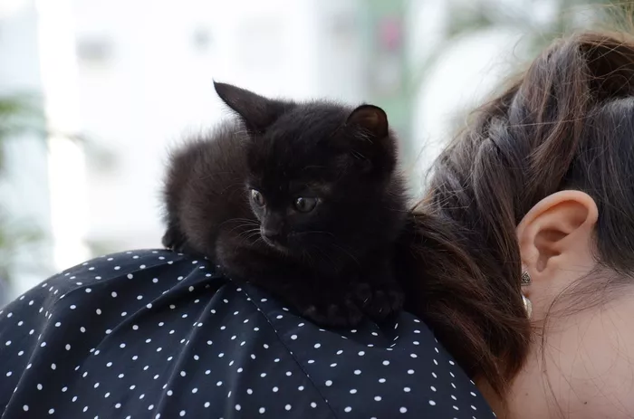
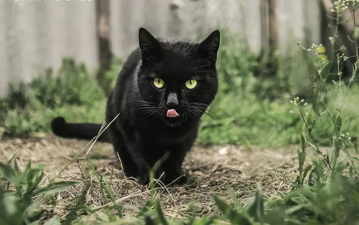

4 Pawsitively Fascinating Facts About Black Cats
Black cats are quintessential Halloween icons—and the number one costume choice for both elementary-aged children and women in their freshman year of college, oddly enough—but do you know how they got such a spooky rap? Beginning in the Middle Ages, black cats became associated with Satan, witches, and witchcraft; some people went so far as to believe that black cats were cohorts to witches or even witches who had taken on another form. This widespread superstition resulted in the horrific mass killing of black cats—and sometimes even their owners. Aside from continuing to represent all things eerie, the fear of black cats still has some influence today. Many animal shelters won’t place black cats in homes during the month of October for fear of them being used sacrificially.
Forget the stereotypical depiction of the perpetually single cat lady. In some parts of the world, it’s believed that black cats can actually improve your love life. In Japan, for example, single women who own black cats are believed to attract more suitors. In Great Britain’s English Midlands, a black cat is the ideal wedding gift; they’re believed to bring good luck and happiness to the bride.
Not only can black cats better your love life, but they can amp up your good luck and improve your finances, too. Historically, sailors brought cats aboard ships to hunt mice—and, presumably, for companionship—but British sailors believed a black cat would bring the ship good luck and ensure a safe return home. It was a little more complicated for pirates, though. They believed a black cat walking toward you was bad luck, a black cat walking away from you was good luck, and if a cat boarded the ship and then jumped off, the ship was going to sink.
Researchers at the National Institutes of Health discovered that the genetic mutations that cause cats to have black coats may offer them some protection from diseases. In fact, the mutations affect the same genes that offer HIV resistance to humans. Since cats can experience many of the same health issues as we do—cancer, HIV, and Alzheimer’s, to name a few—they make perfect models for studying human disease. By figuring out how cats have evolved to resist diseases, researchers can, potentially, learn how to prevent disease in humans as well.
